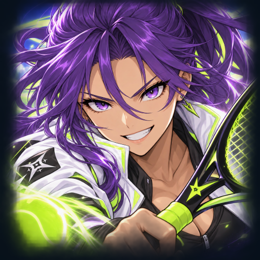

<- all projects

Rift Racket
PC
Volume
Live
Charge anime tennis shots, bend rallies through portals and win the cup.
Rift Racket is a single-player anime racket sports game where Niko turns timing, shot angles and paired portals into fast tactical rallies. Aim for the open court or send the ball through a rift, mixing drives, spin shots and smashes while managing stamina. Six court themes bring narrow boundaries, wind and moving portals, and eight rival styles change every match in a first-to-five campaign cup. Choose from six rackets, draft perks across six families, train with 18 practice drills, and play the daily cup or endless mode.